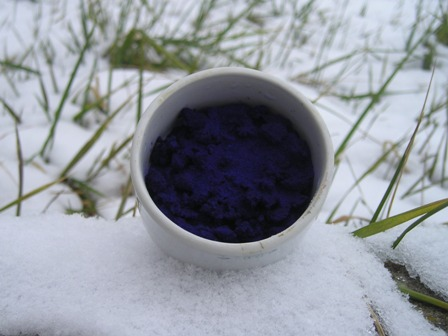
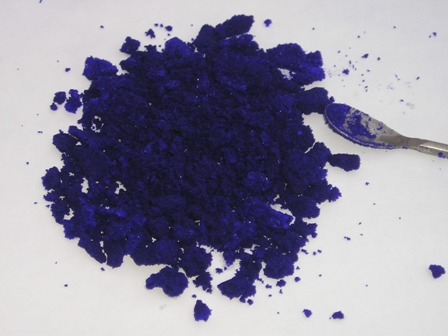

Una sintesi semplicissima di chimica inorganica circa i composti di coordinazione con l'ammoniaca.
Parecchi metalli, specialmente quelli di transizione, danno composti complessi con l'ammoniaca e con residui acidi secondo una formula generale, esposta da Alfred Werner:
M(NH3)pXq dove M è un atomo metallico, NH3 ammoniaca e X un residuo acido
Il legame tra il metallo e il gruppo NH3 è di tipo coordinato, cioè stabilito da coppie di elettroni condivisi tra l'azoto ed il metallo stesso, in modo da formare un ottetto elettronico stabile...
Ho detto anche troppo riguardo la teoria; mi soffermo invece più coerentemente sulla parte sperimentale.
Procedura e materiale necessario:
- solfato di rame CuSO4.5H2O
- ammoniaca concentrata
- etanolo
In un becker da 150 ml contenente 40 ml di acqua, sciogliere riscaldando leggermente 12 g di solfato di rame cristallizzato.
Aggiungere in piccole porzioni 45 ml di ammoniaca al 32%; si ottiene inizialmente un precipitato che pian piano si scioglie dando origine ad una soluzione di un bel blù profondo.

Alla fine concentrare a leggera ebollizione fino ad avere soli 50 ml di soluzione.
Aspettare che si raffreddi a temp. ambiente e aggiungere allora 40 ml di etanolo.
Riempire per due terzi di ghiaccio un becker da 600 ml e immergere il becker con la soluzione prima ottenuta, mescolare ogni tanto e lasciar raffreddare per un una mezz'oretta.
Filtrare su buchner il precipitato. Il filtrato deve essere solo leggermente azzurro.
Lavare sul filtro 2-3 volte con una soluzione 1:1 di ammoniaca/etanolo e lasciar asciugare all'aria.

Si ottengono cristallini di un bellissimo blù violaceo, di formula [Cu(NH3)4]SO4.H2O, leggermente solubili in acqua gelata, di più in acqua a temp. ambiente (18,5 g/1oo ml).
Conservarli ben asciutti in recipiente chiuso, poichè all'aria (o col calore) lentamente si decompongono rilasciando ammoniaca.

Come si vede dalle fotografie, per questa sintesi non è servito il ghiaccio di raffreddamento perchè è stata effettuata in un giorno in cui nel mio lab c'erano 3 (tre!) gradi e bastava uscire e raffreddare il becker direttamente nella neve!
Rimpiangeremo in più occasioni anche questo magnifico tempo invernale, perchè riscaldare è facile e immediato, raffreddare invece è sempre molto più complicato ed energeticamente dispendioso.
Tetramminorame solfato: [Cu(NH3)4]SO4.H2O un altro bel composto, facile da fare, che ha trovato degna collocazione in mezzo a tante altre bottigliette.